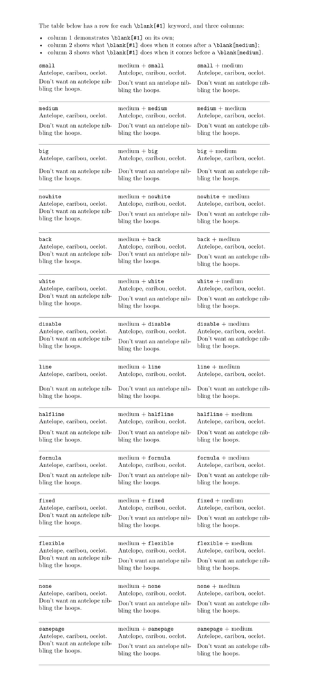

Contents
Summary
The command
\blank
is used for inserting vertical blank space.
Settings
| \blank[...,...] | |
| [...,...] | preference samepage max force enable disable nowhite packed back overlay always weak strong default before inbetween after fixed flexible none small medium big line halfline quarterline formula white height depth standard number*small number*medium number*big number*line number*halfline number*quarterline number*formula number*white number*height number*depth category:number order:number penalty:number dimension name |
| Option | Explanation |
|---|---|
| The first set of options are behaviour modifiers. Starting with default there are size options. | |
| preference | good break (shortcut for penalty:-500) |
| samepage | no break (shortcut for penalty:10000)
|
| max | only if larger |
| force | force even if smaller |
| disable | ignore following |
| nowhite | kill whitespace |
| packed | does not add whitespace but prohibits \parskip |
| back | discard previous blank |
| overlay | position back to the start of the current line and set the next text overlaid on top of what's already there |
| weak | shortcut for order:0 |
| strong | shortcut for order:100 |
| default | alias for white |
| none | \zeropoint |
| small | \smallskipamount / .25\bodyfontlineheight with grid |
| medium | \medskipamount / .5\bodyfontlineheight with grid |
| big | \bigskipamount / \bodyfontlineheight with grid |
| line | \openlineheight / \bodyfontlineheight with grid
|
| halfline | .5\openlineheight / .5\bodyfontlineheight with grid
|
| quarterline | .25\openlineheight / .25\bodyfontlineheight with grid
|
| formula | \medskipamount / .5\bodyfontlineheight with grid |
| white | \parskip / \bodyfontwhitespace with grid |
| height | \strutht / \bodyfontstrutheight with grid |
| depth | \strutdp / \bodyfontstrutdepth with grid |
| standard | .75\openlineheight |
| order:number | use the order number as precedence level when multiple blanks are combined |
| penalty:number | use the number as vertical break penalty |
| dimension | hardcoded dimension |
| name | use a named (predefined) blank |
Description
Insert vertical blank space. A keyword can be added to specify that the whitespace should have a certain height, such as [small], [medium], or [big].
The keyword [disable] disables the next \blank[...], and the key [back] undoes a \blank[...] directly preceding it.
Keywords accept multipliers: to insert whitespace as large as four lines, for example, type \blank[4*big].
In the #Settings table the documentation for the size options gives an overview of what skip is actually inserted for the amount specified. To maintain grid consistency the amounts differ if gridsnapping is enabled. You may notice that all of these values are given in relative units. This is due to the fact that vertical spacing is and should be dependent on the current font size.
Examples
Example 1
-
% To fit all the examples on one page, we need a taller page \definepapersize[tall][width=15cm,height=32cm] \setuppapersize[tall] \setuplayout [topspace=1cm, header=0pt, headerdistance=0pt, footer=0pt, footerdistance=0pt, height=30cm] \defineparagraphs [whiting] [ n=3, before={\blank[none]}, % Minimal padding, please. after={\blank[nowhite]}] % \definestartstop [whiteafter] [before={\blank[none]}, % No padding, please after={\blank[medium]}] % The blank of interest \definestartstop [whitebefore] [before={\blank[medium]}, % The blank of interest after={\blank[none]}] % No padding, please \define[1]\example {\startwhiting \type{#1}\crlf Antelope, caribou, ocelot. \blank[#1] Don’t want an antelope nibbling the hoops. \whiting medium + {\tt #1} % No crlf here, or it'll combine with \blank[none] to create a blank line anyway. % (I assume it's equivalent to \crlf\crlf, or something.) \startwhiteafter Antelope, caribou, ocelot. \stopwhiteafter \blank[#1] Don’t want an antelope nibbling the hoops. \whiting {\tt #1} + medium \crlf Antelope, caribou, ocelot. \blank[#1] \startwhitebefore Don’t want an antelope nibbling the hoops. \stopwhitebefore \stopwhiting \hairline} \starttext The table below has a row for each \type{\blank[#1]} keyword, and three columns: \startitemize[packed] \startitem column 1 demonstrates \type{\blank[#1]} on its own; \stopitem \startitem column 2 shows what \type{\blank[#1]} does when it comes after a \type{\blank[medium]}; \stopitem \startitem column 3 shows what \type{\blank[#1]} does when it comes before a \type{\blank[medium]}. \stopitem \stopitemize \example{small} \example{medium} \example{big} \example{nowhite} \example{back} \example{white} \example{disable} \example{line} \example{halfline} \example{formula} \example{fixed} \example{flexible} \example{none} \example{samepage} \stoptext
- 
Example 2
-
% Doesn't work quite right on the Wiki \hfill right side first \blank[overlay] then left side
Notes
See also
- spac-ver.mkiv
- \defineblank to define a blank keyword that combines the properties of several existing keywords
- \setupblank
- \setupwhitespace to set up the whitespace between paragraphs
- \emptylines
- \godown (but note that \blank is preferred)